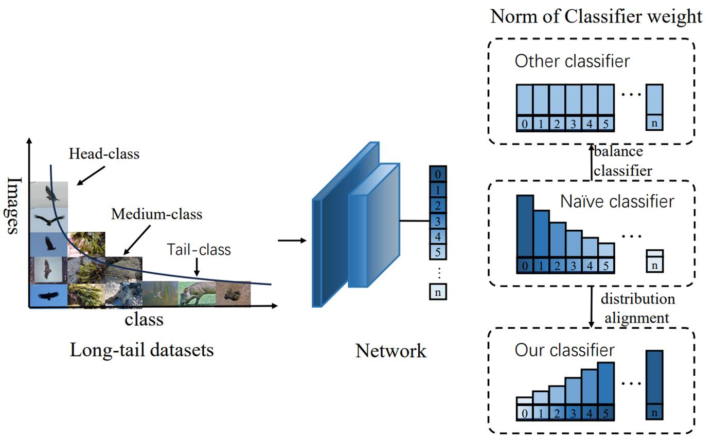
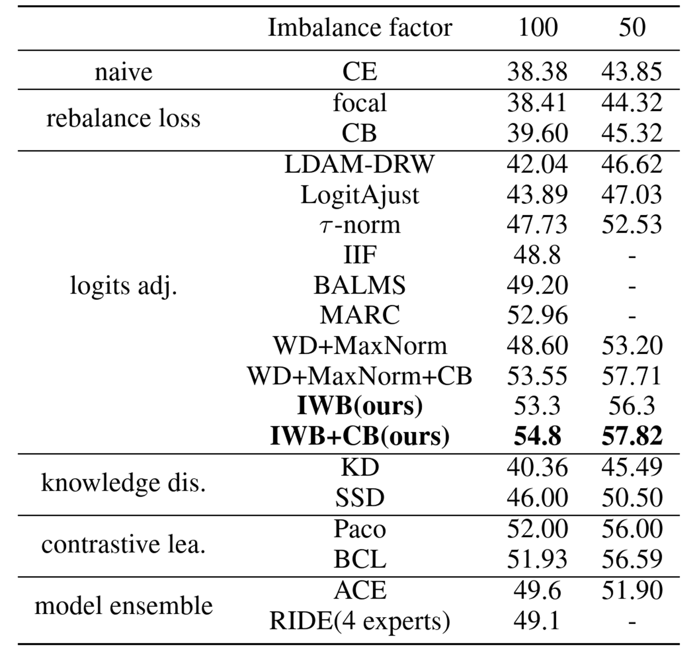
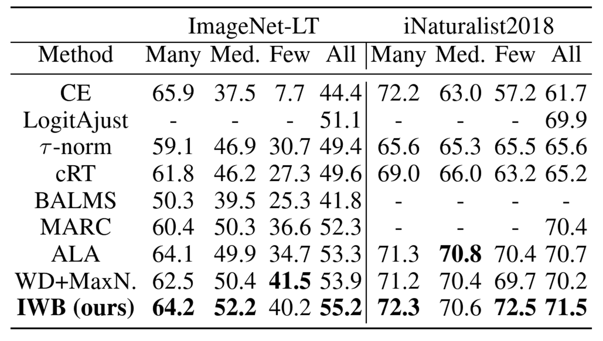
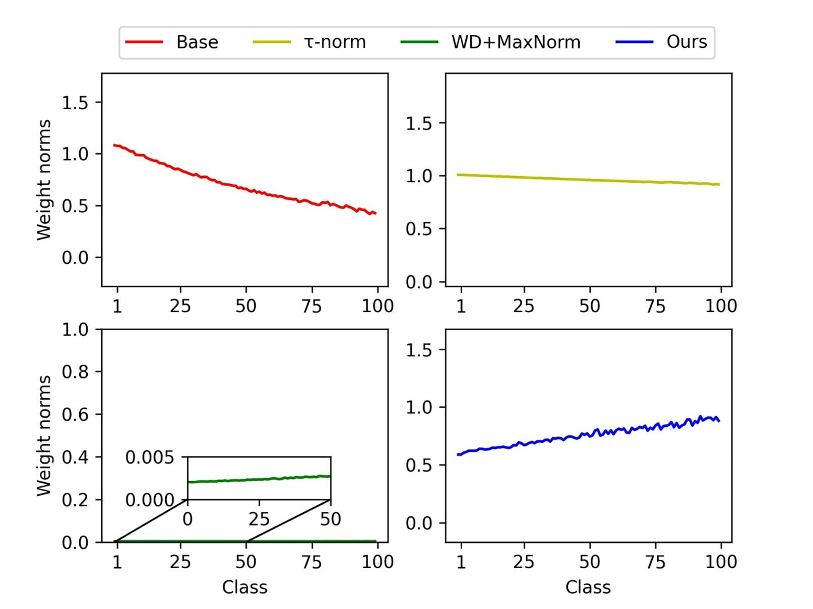

Inverse
Weight-Balancing for Deep Long-Tailed Learning
Wenqi Dang1 Zhou Yang1 Weisheng Dong1,* Xin Li2 Guangming Shi1,3
1 XiDian University, China 2 West Virginia University, America 2 Peng Cheng Laboratory, China

Figure 1. Inverse weight-balancing (IWB) for long-tailed
learning (note the opposite trends in naive and our classifier weight
distribution). Previous studies balance the weightnorm
classifier to cope with long-tailed datasets, ignoring the imbalance problem in
the encoder. We use IWB-based adaptive distribution alignment to reverse the
weight-norms distribution and compensate for the imbalance in both the encoder
and the classifier.
Abstract
The
performance of deep learning models often degrades rapidly when faced with
imbalanced data characterized by a long-tailed distribution. Researchers have
found that the fully connected layer trained by cross-entropy loss has large
weight-norms for classes with many samples, but not for classes with few
samples. How to address the data imbalance problem with both the encoder and
the classifier seems an under-researched problem. In this paper, we propose an
inverse weight-balancing (IWB) approach to guide model training and alleviate
the data imbalance problem in two stages. In the first stage, an encoder and
classifier (the fully connected layer) are trained using conventional
cross-entropy loss. In the second stage, with a fixed encoder, the classifier
is finetuned through an adaptive distribution for IWB in the decision space.
Unlike existing inverse image frequency that implements a multiplicative margin
adjustment transformation in the classification layer, our approach can be
interpreted as an adaptive distribution alignment strategy using not only the
class-wise number distribution but also the sample-wise difficulty distribution
in both encoder and classifier. Experiments show that our method can greatly
improve performance on imbalanced datasets such as CIFAR100-LT with different
imbalance factors, ImageNet-LT, and iNaturelists2018..

Citation
Dang
W, Yang Z, Dong W, et al. Inverse Weight-Balancing for Deep Long-Tailed
Learning[C]//Proceedings of the AAAI Conference on Artificial Intelligence.
2024, 38(10): 11713-11721.
Bibtex
@inproceedings{dang2024inverse,
title={Inverse Weight-Balancing for Deep
Long-Tailed Learning},
author={Dang, Wenqi and
Yang, Zhou and Dong, Weisheng and Li, Xin and Shi, Guangming},
booktitle={Proceedings
of the AAAI Conference on Artificial Intelligence},
volume={38},
number={10},
pages={11713--11721},
year={2024}
}
Download
Results
Comparison with State-of-the-art
Reconstruction Methods:
Table
1. Top-1 accuracy on the testset of CIFAR100-LT. Imbalance
factor is 50 and 100.

Table 2. Top-1 accuracy on the testset of ImageNet-LT and iNaturalist2018.


Figure
2. Comparison of different weight norms distribution. The x-axis represents the
number of class and the y-axis represents the value of weight-norms.
References
[1]
Agarwal, C.; D°Øsouza, D.; and Hooker, S. 2022.
Estimating example difficulty using variance of gradients. In Proceedings of
the IEEE/CVF Conference on Computer Vision and Pattern Recognition,
10368®C10378.
[2]
Alexandridis, K. P.; Luo, S.; Nguyen, A.; Deng, J.;
and
Zafeiriou, S. 2022. Inverse Image Frequency for
Long-tailed Image Recognition. arXiv preprint
arXiv:2209.04861.
[3]
Alshammari, S.; Wang, Y.-X.; Ramanan, D.; and Kong,
S. 2022. Long-tailed recognition via weight balancing. In Proceedings of the
IEEE/CVF Conference on Computer Vision and Pattern Recognition, 6897®C6907.
[4]
Cai, J.; Wang, Y.; and Hwang, J.-N. 2021. Ace: Ally complementary experts for
solving long-tailed recognition in oneshot. In
Proceedings of the IEEE/CVF International Conference on Computer Vision,
112®C121.
[5]
Cao, K.; Wei, C.; Gaidon, A.; Arechiga,
N.; and Ma, T. 2019. Learning imbalanced datasets with label-distribution-aware
margin loss. Advances in neural information processing systems, 32.
[6]
Cui, J.; Zhong, Z.; Liu, S.; Yu, B.; and Jia, J. 2021. Parametric contrastive
learning. In Proceedings of the IEEE/CVF international conference on computer
vision, 715®C724.
[7]
Cui, Y.; Jia, M.; Lin, T.-Y.; Song, Y.; and Belongie,
S. 2019. Class-balanced loss based on effective number of samples. In
Proceedings of the IEEE/CVF conference on computer vision and pattern
recognition, 9268®C9277.
[8]
Drummond, C.; Holte, R. C.; et al. 2003. C4. 5, class
imbalance, and cost sensitivity: why under-sampling beats
over-sampling.
In Workshop on learning from imbalanced
datasets
II, volume 11, 1®C8.
[9]
Estabrooks, A.; Jo, T.; and Japkowicz,
N. 2004. A multiple resampling method for learning from imbalanced data sets.
Computational intelligence, 20(1): 18®C36.
[10]
Feng, C.; Zhong, Y.; and Huang, W. 2021. Exploring classification equilibrium
in long-tailed object detection. In Proceedings of the IEEE/CVF International
conference on computer vision, 3417®C3426.
[11]
Gal, Y.; and Ghahramani, Z. 2016. Dropout as a bayesian approximation: Representing model uncertainty in
deep learning. In international conference on machine learning, 1050®C1059.
PMLR.
[12]
Han, H.; Wang, W.-Y.; and Mao, B.-H. 2005. Borderline-SMOTE: a new
over-sampling method in imbalanced datasets learning. In Advances in Intelligent
Computing: International Conference on Intelligent Computing, ICIC 2005, Hefei,
China, August 23-26, 2005, Proceedings, Part I 1, 878®C887. Springer.
[13]
He, K.; Zhang, X.; Ren, S.; and Sun, J. 2016. Deep residual learning for image
recognition. In Proceedings of the IEEE conference on computer vision and
pattern recognition, 770®C778.
[14]
Hinton, G.; Vinyals, O.; and Dean, J. 2015.
Distilling the knowledge in a neural network. arXiv
preprint arXiv:1503.02531.
[15]
Iscen, A.; Araujo, A.; Gong, B.; and Schmid, C. 2021.
Class-balanced distillation for long-tailed visual recognition. arXiv preprint arXiv:2104.05279.
[16]
Jamal, M. A.; Brown, M.; Yang, M.-H.; Wang, L.; and Gong, B. 2020. Rethinking
class-balanced methods for long-tailed visual recognition from a domain
adaptation perspective. In Proceedings of the IEEE/CVF Conference on Computer
Vision and Pattern Recognition, 7610®C7619.
[17]
Joloudari, J. H.; Marefat,
A.; Nematollahi, M. A.; Oyelere,
S. S.; and Hussain, S. 2023. Effective Class-Imbalance Learning Based on SMOTE
and Convolutional Neural Networks. Applied Sciences, 13(6): 4006.
[18]
Kang, B.; Xie, S.; Rohrbach, M.; Yan, Z.; Gordo, A.;
Feng, J.; and Kalantidis, Y. 2019. Decoupling
representation and classifier for long-tailed recognition. arXiv
preprint arXiv:1910.09217.
[19]
Krizhevsky, A.; Hinton, G.; et al. 2009. Learning
multiple layers of features from tiny images.
[20]
Krizhevsky, A.; Sutskever,
I.; and Hinton, G. E. 2017. Imagenet classification
with deep convolutional neural networks. Communications of the ACM, 60(6):
84®C90.
[21]
Laurens, V. D. M.; and Hinton, G. 2008. Visualizing Data using t-SNE. Journal
of Machine Learning Research,
9(2605):
2579®C2605.
[22]
Li, J.; Tan, Z.; Wan, J.; Lei, Z.; and Guo, G. 2022. Nested collaborative
learning for long-tailed visual recognition. In Proceedings of the IEEE/CVF
Conference on Computer Vision and Pattern Recognition, 6949®C6958.
[23]
Li, T.; Wang, L.; and Wu, G. 2021. Self supervision to distillation for
long-tailed visual recognition. In Proceedings of the IEEE/CVF international
conference on computer vision, 630®C639.
[24]
Lin, J. Z.; and Bradic, J. 2021. Learning to combat
noisy labels via classification margins. arXiv
preprint arXiv:2102.00751.
[25]
Liu, S.; Garrepalli, R.; Dietterich,
T.; Fern, A.; and Hendrycks, D. 2018. Open category
detection with PAC guarantees. In International Conference on Machine Learning,
3169®C3178. PMLR.
[26]
Liu, Z.; Miao, Z.; Zhan, X.; Wang, J.; Gong, B.; and Yu, S. X. 2019.
Large-scale long-tailed recognition in an open world. In Proceedings of the
IEEE/CVF conference on computer vision and pattern recognition, 2537®C2546.
[27]
Menon, A. K.; Jayasumana, S.; Rawat, A. S.; Jain, H.;
Veit, A.; and Kumar, S. 2020. Long-tail learning via
logit adjustment. arXiv preprint arXiv:2007.07314.
[28]
Peng, B.; Islam, M.; and Tu, M. 2022. Angular Gap: Reducing the Uncertainty of
Image Difficulty through Model Calibration. In Proceedings of the 30th ACM
International Conference on Multimedia, 979®C987.
[29]
Ren, J.; Yu, C.; Ma, X.; Zhao, H.; Yi, S.; et al. 2020. Balanced meta-softmax for long-tailed visual recognition. Advances in
neural information processing systems, 33: 4175®C4186.
[30]
Van Horn, G.; Mac Aodha, O.; Song, Y.; Cui, Y.; Sun,
C.; Shepard, A.; Adam, H.; Perona, P.; and Belongie, S. 2018. The inaturalist
species classification and detection dataset. In Proceedings of the IEEE
conference on computer vision and pattern recognition, 8769®C8778.
[31]
Wang, H.; and Yan, J. 2022. Leveraging Angular Information Between Feature and
Classifier for Long-tailed Learning: A Prediction Reformulation Approach. arXiv preprint arXiv:2212.01565.
[32]
Wang, X.; Lian, L.; Miao, Z.; Liu, Z.; and Yu, S. X. 2020. Long-tailed
recognition by routing diverse distribution aware experts. arXiv
preprint arXiv:2010.01809.
[33]
Wang, Y.; Zhang, B.; Hou, W.; Wu, Z.; Wang, J.; and Shinozaki, T. 2021. Margin
calibration for long-tailed visual recognition. arXiv
preprint arXiv:2112.07225.
[34]
Xie, S.; Girshick, R.;
Dollar, P.; Tu, Z.; and He, K. 2017. Aggregated residual transformations for
deep neural networks.In
Proceedings of the IEEE conference on computer vision and pattern recognition,
1492®C1500.
[35]
Yang, Y.; and Xu, Z. 2020. Rethinking the value of labels for improving
class-imbalanced learning. Advances in neural information processing systems,
33: 19290®C19301.
[36]
Yang, Z.; Pan, J.; Yang, Y.; Shi, X.; Zhou, H.-Y.; Zhang, Z.; and Bian, C. 2022. ProCo:
Prototype-Aware Contrastive Learning for Long-Tailed Medical Image
Classification. In Medical Image Computing and Computer Assisted
Intervention®CMICCAI 2022: 25th International Conference, Singapore, September
18®C22, 2022, Proceedings, Part VIII, 173®C182. Springer.
[37]
Zhang, S.; Li, Z.; Yan, S.; He, X.; and Sun, J. 2021a. Distribution alignment:
A unified framework for long-tail visual recognition. In Proceedings of the
IEEE/CVF conference on computer vision and pattern recognition, 2361®C2370.
[38]
Zhang, X.; Fang, Z.; Wen, Y.; Li, Z.; and Qiao, Y.
2017. Range loss for deep face recognition with long-tailed training data. In
Proceedings of the IEEE International Conference on Computer Vision, 5409®C5418.
[39]
Zhang, Y.; Hooi, B.; Hong, L.; and Feng, J. 2021b.
Test-agnostic long-tailed recognition by test-time aggregating diverse experts
with self-supervision. arXiv e-prints, arXiv®C2107.
[40]
Zhang, Y.; Kang, B.; Hooi, B.; Yan, S.; and Feng, J.
2021c. Deep long-tailed learning: A survey. arXiv
preprint arXiv:2110.04596.
[41]
Zhao, Y.; Chen, W.; Tan, X.; Huang, K.; and Zhu, J. 2022. Adaptive logit
adjustment loss for long-tailed visual recognition. In Proceedings of the AAAI
Conference on Artificial Intelligence, volume 36, 3472®C3480.
[42]
Zhong, Z.; Cui, J.; Liu, S.; and Jia, J. 2021. Improving calibration for
long-tailed recognition. In Proceedings of the IEEE/CVF conference on computer
vision and pattern recognition, 16489®C16498.
[43]
Zhu, J.; Wang, Z.; Chen, J.; Chen, Y.-P. P.; and Jiang, Y.-G. 2022. Balanced
contrastive learning for long-tailed visual recognition. In Proceedings of the
IEEE/CVF Conference on Computer Vision and Pattern Recognition, 6908®C6917.
Contact
Wenqi Dang, Email: wqdangxdu@gmail.com
Zhou Yang, Email: yangzhouxdu@gmail.com
Weisheng Dong, Email:
wsdong@mail.xidian.edu.cn
Xin Li, Email: xin.li@main.wvu.edu
Guangming Shi, Email: gmshi
xidian@163.com